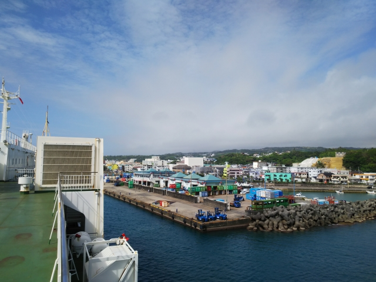

2021（R3）7月3日～6日 沖永良部島＆川内高城温泉
よーやく緊急事態宣言も明けたので、ちょっと遊びに行ってきました。
朝の清荒神駅。今回は鉄分が非常に少ないので、オ
ープニングは鉄ネタにしときます。
今回は久々の飛行機移動。
関空の第二ターミナル行きの連絡バスは、なんと連
接車になってました。
当然、貧乏人はピーチです。
歩いて乗り込みます。
無事、到着。

じゃじゃ～ん！奄美大島に到着です。ちょっと曇ってますが、めちゃめ
ちゃ暑いです。
バスで奄美の中心の名瀬に向かいます。
バスの一日券が２１００円で買えたので、非常に
助かります。
これは奄美名物の鶏飯です。なかなかいけます。
またバスに乗って南下していきます。
奄美大島の一番南の古仁屋の港に着きました。
２０年ぶりぐらいかな。
奄美大島といえば、男はつらいよシリーズの事実上
の最終作の舞台となったことでおなじみですよね。
古仁屋の街はその作品でも重要なポイントになって
ます。
今はシャッターのおりたこの建物、作品ではリリー
さんが買い物をした食料品店となってます。
食料品店を出たリリーさんが港に向かうところです
が、特徴的な木は当時のままでした。
そして、リリーさんや満男や泉ちゃんも乗ったでいご丸が、まだ現役でし
た。
それでは、フェリーに乗って、リリーさんの家のあ
る加計呂麻島へ。
前、来たときもフェリーに乗ったと思うけど、全然
記憶ないっす。
フェリーといっても、加計呂麻島は古仁屋から見え
てて、３０分ぐらいで到着です。
瀬相の港が見えてきました。
珍しく、船の中で地元の人に話しかけられました。
少年野球の引率の人で、平日は島で練習してるけど
人数足りなくて休日は本島側に行って合同練習して
そうです。愚息に爪の垢でも煎じて飲ませたい話や
わ。
港に着いたら、バスがずらっと並んで待ってくれて
ます。
残念ながら、バス会社が違うので一日券は使えまへ
ん。
一番左の、バンタイプに乗り込みます。
於斉という集落です。
大きなガジュマルの木が名物で、もちろん「男はつらいよ」にも
登場します。満男を乗せたリリーさんの車が通ります。
バスは秋徳という集落で１５分ぐらい小休止します。
こっちも缶コーヒー飲んで休憩です。
リリーさんの家のある諸鈍の集落に到着です。
花の時期には、デイゴ並木に赤い花が咲きほこるそ
うです。
残念ながら道は舗装されてますが、その他は当時の
雰囲気のままです。
※キレてないっすよ
リリーさんの家も残ってました。
今は宿になってるみたいです。

しかし、山田組も、よくぞこんなおもむきのある場
所を探し当てたもんです。加計呂麻島の中でも、な
かなかない場所やで。
諸鈍集落を堪能して、歩いて本島に戻る港まで歩い
て向かってると、怪しげな軽バンが横に停まったの
で、何かと思ったら、渡し船の船長でした。
親切に、港まで送ってくれるとのこと。お言葉に甘
えて同乗させてもらいました。
ギアを変えるレバーのところに灰皿のごとくタバコ
の灰がたまってたのはドン引きでしたが・・・
でいご丸！！
奄美本島と加計呂麻島の間は、フェリーの他に、こ
のような小型の船が「海上タクシー」という呼び名
で結んでます。定期船なんですが、この便、５分ぐ
らい早く出たで。
で、出航してしばらくして、船長のケータイが鳴っ
たと思ったら、案の定、引き返して行きました。
人でなく、オードブルを古仁屋に届けてという依頼
でしたが・・・
めちゃめちゃ気持ち良かったけど、寒い日や雨の日
は乗ってられへんなぁ。
でも、あの「でいご丸」に乗れて満足です。
最終バスで名瀬に戻ります。
翌朝、ホテルから港を見ると・・・
おるおる、鹿児島から来たフェリーや。
名瀬新港から、いよいよ今回の目的地、沖永良部に
向けて出港です。

３時間ぐらいで徳之島に到着。ここはまた別の機会に来たいねぇ。
徳之島を出て２時間ぐらいで、沖永良部島が見えて
きました！
海の色も、本州とは大違いの青さです。
いよいよ和泊港に入港。
上陸したとたん、もう真夏の暑さと湿度です。
ホテルを港の近くにして正解でした。でかい荷物か
かえて歩いてられへんで。
ホテルに荷物を置いて、和泊の市街をぶらつきます。
なんと、あましんがここにもっ！
和泊市内で原チャリを借りて、島の探索に向かいま
す。
まずはジッキョヌホーへ。
沖永良部には大きな川がなく、昔の水場のひとつです。
今ではガキのプールになってる・・・
実は先述の男はつらいよ、加計呂麻島のシーンの中にい
くつか沖永良部でのシーンが混ざっていて、ここもその
ひとつです。
次に屋子母ビーチへ。干潮だったのが残念。
残念ながらソーメン流しはやってなかった・・・
昭和な感じがいいっすね。
そして沖永良部で一番有名な観光地の昇竜洞へ。
観光客、ゼロでした。
昨日まで雨で、中は水が多くて入れなかったそうで
す。ついてるわ～

なかなか立派な鍾乳洞です。
洞窟感が強くて、気に入りました。
ただ、上から垂れてくる水が多くて困りました。
※キレてないっすよ
鍾乳洞を出て半崎という岬へ。
ここも男はつらいよのロケ地です。
満男が車から降りて海へどんどん歩いていて視界か
ら消えて、さては飛び降りたか！とリリーさんがあ
わてるシーンでした。（単に立ちションしてただけ）
沖永良部の風景を何点か
翌日、島で一番おすすめと言われているワンジョ
ビーチへ。
干潮＆ちょっと曇り気味なのが残念！
そして、もうひとつの名所、フーチャです。
洞門のような感じですね。
北端の国頭岬へ向かう途中の海岸。
浅いプールみたいになっていて、子連れにはええやろなぁ。
泳ぎたいっ！
最後に、隠れた名所、日本一のガジュマルへ。
小学校の校庭にあります。遊び疲れた子どもにはえ
え木陰やわ。
和泊のバスターミナル。今回、一回も乗られへんか
った。
沖永良部を十分満喫して、さて、戻るか。
那覇からのフェリーが見えてきました。
ここから１８時間かけて鹿児島に戻ります。

加計呂麻島と奄美大島が見えてきました。
ゆれもなく快適な船旅です。
そろそろ日暮れです。
小山のような島は横当島と思われます。
トカラ列島の最南端の島で無人島です。
綺麗な茜色の空ですね。
私の顔も、焼けまくりです。
久々に雑魚寝の２等船室ですが一人おきになってる
ので意外に快適です。
翌朝８：３０、定刻に鹿児島港に到着です。
船内レストランで夕食に奮発してカツカレー頼んだ
のに、なかなか出てこずにキレかけた以外、快適な
船旅でした。
桜島はやや曇ってます。
しかし鹿児島も暑い！
少し時間があったので、鹿児島駅の近くにある石橋
記念公園へ。
市内にあった石橋を移設して集めた公園だそうです。
無料なんがいいです。
鉄分不足でそろそろ見るのやめられても困るので、
ここらでサービスショットを。
鹿児島駅に隣接する貨物駅です。
駐車場に侵入していって撮影する元気はありまへん。
鹿児島駅は市電の終点でもあります。駅前整備で雰
囲気変わってしまいましたが、オリジナル塗装も健
在っすね。
鹿児島駅から川内に向かいます。
西鹿児島、いや鹿児島中央で乗り換えです。
国鉄型もまだ健在ですわ。
主要駅でも雑草を抜かない、鉄道愛＜自然愛なＪＲ九州の姿勢
に感動。
南国の車窓を楽しみながら、川内到着です。
ＪＲはここまで。この先は第三セクターになってま
す。
ここから最後の目的地へローカルバスで向かいま
す。
３０分ほどバスに揺られて到着しました。
川内高城温泉です！
西南戦争前に西郷どんも逗留した温泉です。
これが熱すぎ！浸かれまへんがな・・・とほほ・・・
ひなびた、を通り過ぎて、さびれかけた温泉場でした。
温泉街のはずれに国鉄の貨車が。
鉄分、こんなもんで充分でしょうか？
さて、そろそろ帰りますか。
鹿児島行のさくらは運よく８００系でした。
在来線で１時間以上かかった川内－鹿児島間も、新
幹線だと１７分！どんな世界やねん！！